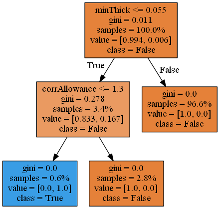

プラントのRBM解析に利用された入力データをビッグデータと見立てた上で，決定木解析を行う。対象とするプラントは'A'もしくは'B'である。
 plant A,高温硫化物とナフテン酸腐食,max_depth=3
from RBM import DataTreatO as dto
df,rename_term,rename_damage=dto.GetData(plant='A') #'A' もしくは 'B' の指定
# インスタンス生成
dtoData=dto.DataTreatO(df,rename_term,rename_damage)
# データ加工
data,t_data,damage=dtoData.DataTreat()
dam_data,damage_name=dtoData.DamageTake(damage)
# 利用可能な損傷機構の一覧
for i in range(len(dam_data)):
print(i,dam_data[i],damage_name[i])
from sklearn.metrics import confusion_matrix
from sklearn.metrics import accuracy_score
ii=2 #決定木解析を行う損傷機構のインデックス
max_depth=3
#決定木解析
from sklearn import tree
while True:
print('損傷機構のインデックス?')
ii=input()
ii=int(ii)
print('決定木の深さ?')
max_depth=input()
max_depth=int(max_depth)
dtree = tree.DecisionTreeClassifier(max_depth=max_depth)
DamageMode=dam_data[ii]
damage_name=rename_damage.iloc[ii,0]
dtree = dtree.fit(data, damage[DamageMode])
predicted = dtree.predict(data)
mat=confusion_matrix(damage[DamageMode],predicted)
accuracy=accuracy_score(damage[DamageMode],predicted)
print('damage,accuracy=',damage_name,accuracy)
print('終了しますか(y or n)')
ans=input()
if ans=='y':
break
from IPython.display import Image
graph=dtoData.DrawTree(data,dtree)
Image(graph.create_png())
image_out=True #決定木画像と推論エンジンを出力するときTrueとして下さい
if image_out:
fname=damage_name+'.png'
graph.write_png(fname)
#学習内容の保存
from sklearn.externals import joblib
fname=damage_name+'.clf'
joblib.dump(dtree, fname)